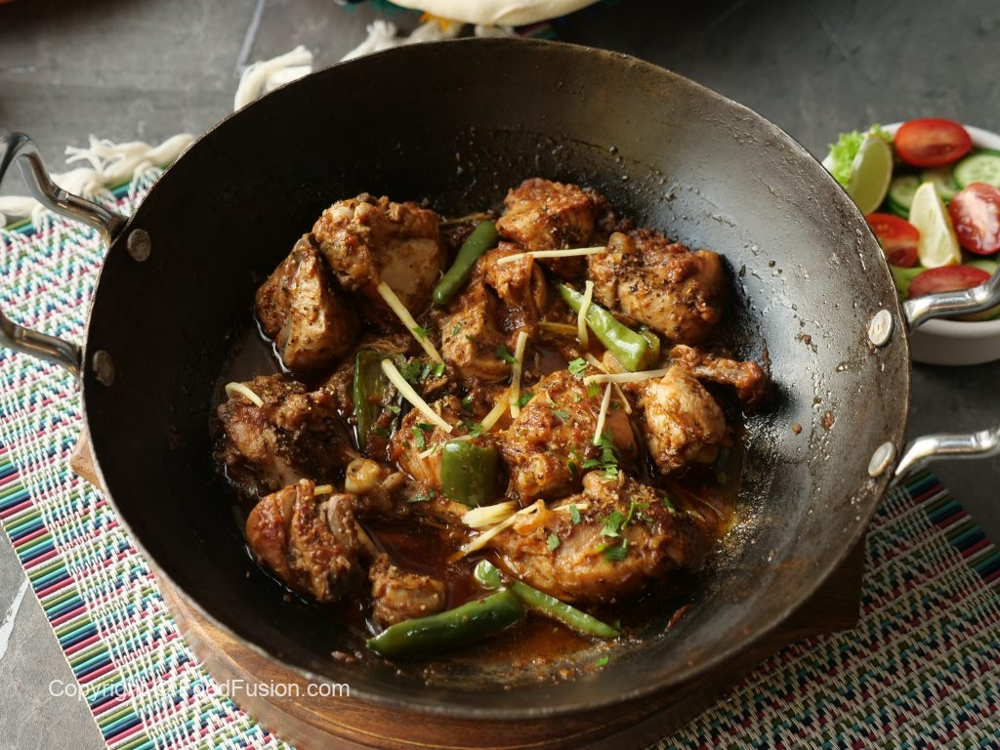

Chicken Karahi Recipe

Peshawari chicken karahi is a spicy and flavorful Pakistani dish made with
chunks of chicken and a blend of aromatic spices. The chicken is cooked in
a karahi, which is a type of deep, circular cooking pot with high sides
and a flat bottom that is traditionally used in Indian and Pakistani
cuisine.
The dish is typically served with rice or roti and garnished with fresh
cilantro and a squeeze of lemon juice. It is a popular choice at Pakistani
restaurants and is enjoyed by people of all ages.
Ingredients:
- Water ½ litre
- Namak (Salt) 1 tbs or to taste
- Sirka (Vinegar) 1 & ½ tbs
- Chicken karahi cut 750g
- Ghee (Clarified Butter) ¾ Cup
- Adrak lehsan paste (Ginger garlic paste) 1 & ½ tbs
- Namak (Salt) 1 tsp or to taste
- Tamatar (Tomatoes) whole 7-8 medium
- Hari mirch (Green chillies) 6-7
- Zeera (Cumin seeds) roasted & crushed 1 tsp
- Kali mirch (Black pepper) crushed 1 tsp
- Adrak (Ginger) julienne 2-inch piece
- Adrak (Ginger) julienne
- Hara dhania (Fresh coriander) chopped
Direction
- In a bowl,add water,salt,vinegar & mix well
-
Add chicken,mix well & let it rest for 15-20 minutes then strain & set
aside.
- In a wok,add clarified butter & let it melt.
-
Add chicken,mix well until it changes color & cook on high flame until
light golden (12-15 minutes)
- Add ginger garlic paste,salt,mix well & cook for 1-2 minutes.
-
Place whole tomatoes & cook on high flame for 2 minutes then mix
well,cover & cook on medium flame until tomatoes are tender (5-6
minutes).
-
Remove tomato skin,mix well & mash tomatoes with spoon & cook on high
flame until ghee separates (8-10 minutes).
- Add green chillies & mix well.
- Add cumin seeds,black pepper crushed,ginger & mix well.
- Garnish with ginger,fresh coriander & serve with naan & raita!